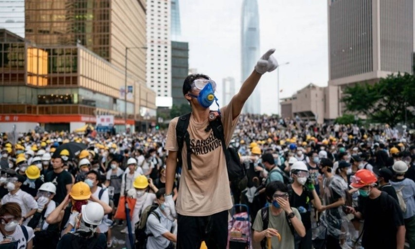
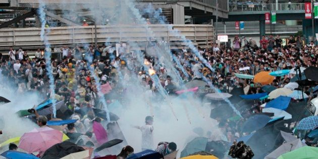
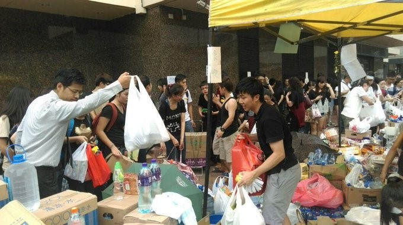
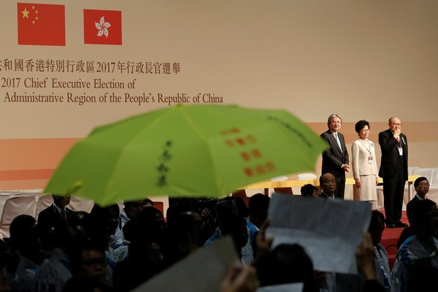
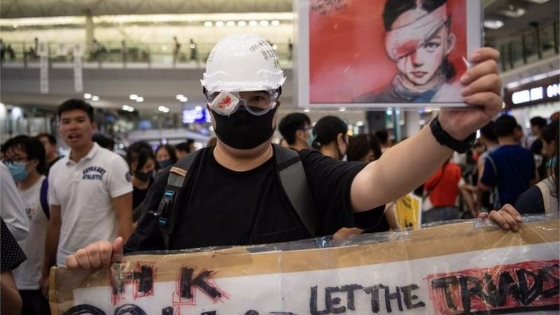
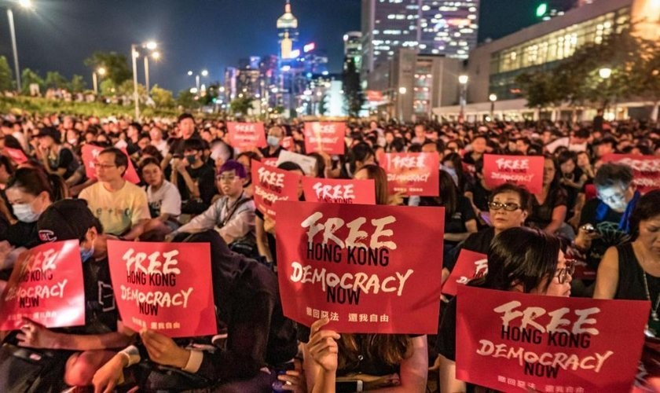

China x Hong Kong: uma guerra pela democracia.
A onda de protestos anti-governo que culmina a mais de um ano não parece ter previsão de término.
Após a Primeira Guerra do Ópio, em 1842, a China cedeu o território de Hong Kong ao Reino Unido e, até o ano de 1997, o território foi colônia britânica. A transferência da soberania deste território à China continental foi selada junto a um acordo pela autonomia de Hong Kong chamado Lei Básica, no qual ficava estabelecido que a ilha teria 50 anos de liberdade, seguindo um modelo de “um país, dois sistemas”. Apesar de o acordo expirar somente em 2047, não demorou muito para o governo chinês descumpri-lo, dando início a uma nova era de protestos e reivindicações populares.
Em 2003, apenas seis anos após o retorno do território honconguês à administração chinesa, meio milhão de pessoas iam às ruas protestar contra uma lei que proibia atos de subversão contra o governo chinês. Já em 2007, parlamentares do governo chinês renunciaram em grupo contra o adiamento da entrada em vigor de eleições amplas. Com este ato, ficou claro para a população local o desinteresse da administração chinesa pelos direitos democráticos do povo ao voto.
Foi então que, em 2014, centenas de milhares de manifestantes ocuparam a cidade e bloquearam cruzamentos por 79 dias em forma de protesto. Os cidadãos exigiam a eleição do chefe do Executivo por sufrágio universal (pleno direito ao voto de todos cidadãos adultos). A repressão policial foi grande, e para se proteger da chuva de gás lacrimogêneo e spray de pimenta, manifestantes levavam consigo guarda-chuvas para as manifestações. Isso fez com que o movimento ficasse conhecido como “A Revolução do Guarda-Chuva”.
Foi com este movimento que o mundo tornou sua atenção a Hong Kong e seus protestos. Veio à tona uma admiração pela organização dos manifestantes mesmo em meio ao caos, mostrando ao mundo que quando o povo se une pelo bem comum pode-se fazer uma luta limpa. Eles tinham estoques de água potável e suprimentos e mantinham constante acesso à internet para difundir suas mensagens e avisos sobre protestos.
“Funcionários de escritório levam doações para os manifestantes de HK durante o intervalo de almoço” – WSJ China Real Time
O estopim deste movimento foi quando Pequim declarou que a governança do território de Hong Kong seria disputada apenas por candidatos previamente aprovados por um comitê representativo do Partido Comunista Chinês. Ao final, quando as eleições enfim ocorreram em 2017, Carrie Lam, a “favorita do regime comunista”, somou 777 votos se tornando a chefia de governo do território autônomo. Seu governo está previsto para continuar até o ano de 2022. Aqueles que manifestavam em 2014 se mostraram contrariados com o resultado.
“Guarda-chuva foi aberto durante anúncio da eleição de Carrie Lam em alusão à serie de protestos que sacudiu Hong Kong em 2014 — Foto: Tyrone Siu/Reuters”
Já em 2019, uma nova onda de protesto se iniciou em junho. Desta vez o povo de Hong Kong ia às ruas protestar contra um projeto de lei apresentado em abril que permitiria a extradição de suspeitos de crimes em Hong Kong para a China continental.
Mas afinal, por que o povo honconguês teme esse projeto de lei? A oposição afirma que esta proposta abre portas para julgamentos injustos e tratamentos violentos, além de ampliar cada vez mais a influência da China continental sobre Hong Kong, que, de acordo com o tratado de autonomia, deveria manter-se livre de tais influências até, pelo menos, 2047. Este projeto de lei preocupou os manifestantes, que temiam que esta nova norma fosse usada para reprimir e atacar ativistas e jornalistas, mais uma vez ferindo o direito democrático a liberdade de expressão.
Milhares de pessoas resistiram as fortes repressões policiais e continuaram protestando em forma de repúdio a este ato. O caso de um manifestante que foi ferido no olho teve grande repercussão e virou um símbolo do movimento, que agora se revoltava também contra o abuso de força por parte da polícia de Hong Kong.
Após semanas de manifestações, Carrie Lam anunciou que o projeto de lei seria suspenso indefinidamente. Em setembro ele foi finalmente derrubado mas não foi o suficiente para acalentar os manifestantes, que afirmaram ser “muito pouco e tarde demais”. As manifestações continuaram e em 1º de outubro de 2019 a China vivia um de seus “dias mais violentos e caóticos”, com mortes de manifestantes e destruição de patrimônios públicos e privados. Os manifestantes não ficaram para trás frente à violência policial, pois, quando um policial atirou em um manifestante à queima roupa, no mesmo dia, ativistas pró-democracia atearam fogo em um homem a favor de Pequim. Em junho deste ano marcou-se o primeiro aniversário destas manifestações em massa do movimento de protestos anti-governo.
Em 30 de junho de 2020 o chefe do executivo aprovou a Lei da República Popular da China sobre Salvaguarda da Segurança Nacional em Hong Kong. Esta decisão gerou ainda mais controvérsias na região, visto que é inconsistente com a Lei Básica. Desta vez, não somente o povo reprimiu a decisão governamental, como também os Estado Unidos, ainda sob a administração de Trump, que ameaçaram impor tarifas ao território se esta lei de segurança fosse imposta. O Congresso Chinês ignorou os protestos de ambos a população e os EUA, resultando em mais uma onda de manifestações e o rompimento de relações econômicas especiais entre o país norte-americano e a China.
Uma lei semelhante a esta foi o que causou agito popular em 2003, apresentado no inicio do artigo. Mas por que a população de Hong Kong teme esta lei? É porque esta pode levar agências de inteligência chinesa a montarem suas bases em Hong Kong, ameaçando a liberdade judiciária local, além de a mesma minar a autonomia de Hong Kong, que deveria ser garantida pela Lei Básica.
E como este projeto de lei mina a autonomia de Hong Kong? Existem vários tópicos que comprovam isto. O artigo 62 da lei estabelece que ela prevaleça em caso de qualquer inconsistência com as leis locais de Hong Kong, criando uma relação de sobreposição entre as leias de Hong Kong e da China continental, e deixando as chinesas em um lugar superior na hierarquia criada. A legislação também determina que suspeitos possam ser removidos para julgamento na China Continental, semelhante ao projeto rejeitado em 2019 e novamente possibilitando tratamentos injustos e censura no julgamento.
Assim, fica clara a falsa independência de Hong Kong por parte da administração de Pequim. Graças a isto a onda de manifestações não parece ter um fim prévio, pelo menos não até que a democracia de Hong Kong seja garantida e a administração local seja liberta das constantes intervenções do partido comunista chinês.
Quem escreveu este artigo?
Ana Carolina F. Silva, 18 anos, é uma estudante, atualmente cursando o terceiro ano do Ensino Médio. Mãe de um gato de três meses (Paçoca), Ana Carolina é uma aspirante a diplomacia e fã de política que deseja poder mudar o mundo um dia.
Aluno(a): Ana Carolina F. Silva